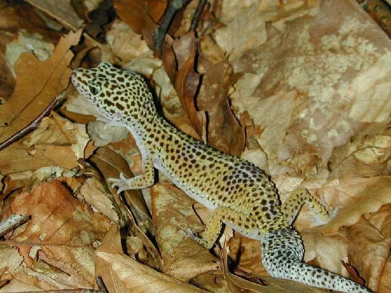

爬行动物 · 动物界
豹纹守宫 Eublepharis macularius

原产南亚的温和守宫，身上布满豹纹状斑点，有可活动的眼睑，是最受欢迎的入门级爬行宠物之一，适合新手饲养。
- 分类
- 门脊索动物门纲爬行纲目有鳞目科睑虎科属睑虎属
- 栖息环境
- 南亚与西亚的干旱草原、荒漠、岩石地带
- 地理分布
- 巴基斯坦、印度西北部、阿富汗及伊朗东部
- 保护级别
- IUCN 暂无评估；非中国原产，在中国无保护级别
物种志
豹纹守宫体长 20–25 厘米，其中尾部约占一半，身体较粗壮，头部宽大，皮肤上密布疣状小突起，底色为淡黄或橙色，上面分布黑色或褐色的豹纹状斑点；与其他壁虎不同，它有可活动的眼睑，能像人一样眨眼；脚趾没有吸盘，靠爪子在岩石和沙地上行走。
它分布于巴基斯坦、印度西北部、阿富汗和伊朗东部的干旱草原、荒漠与岩石地带，夜行性，捕食昆虫和蜘蛛，尾部可储存脂肪，断尾后能再生。每年 3–8 月繁殖，雌体每次产卵 2 枚，一季可产 2–5 窝，孵化期约 45–60 天，巢温影响后代性别。它因性情温顺、饲养容易而成为最受欢迎的爬行宠物之一；在中国属于外来物种，饲养者不可随意放生。
形态与习性
- 食性昆虫和蜘蛛，如蟋蟀、面包虫
- 体长20–25 cm（含尾）
- 体重约 45–80 g
- 寿命约 10–20 年
- 繁殖卵生，每次 2 枚，一季 2–5 窝，孵化 45–60 天
- 活动节律夜行性，白天藏在岩石缝隙中
- 特点有可活动的眼睑，能眨眼；断尾可再生
趣味知识
- 豹纹守宫有可活动的眼睑，是少数会“眨眼”的壁虎之一。
- 它把脂肪储存在尾巴里，尾巴粗细可以反映营养状况。
- 豹纹守宫是人工繁殖最成熟的爬行宠物之一，色型品系极其丰富。